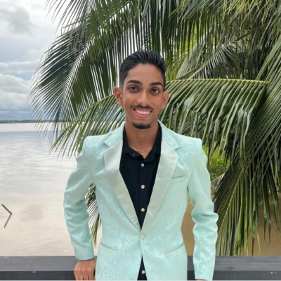

Bachelor ICT — System & Network Engineering
UNASAT, Suriname
Eerstejaars student in de richting SNE. Ik leer over netwerken, systemen en IT-infrastructureur.
Eerstejaars ICT-student aan UNASAT, richting System
Network Engineering. Gepassioneerd over
technologie en het bouwen van slimme systemen.

Ik ben Dahoe Ishaan, 19 jaar oud, en woon in Suriname. Op dit moment ben ik eerstejaars ICT-student aan UNASAT, waar ik de richting System & Network Engineering (SNE) volg.
Technologie heeft mij altijd geboeid — van hoe netwerken werken tot het bouwen van slimme en innovatieve systemen. Ik ben iemand die graag leert, nieuwsgierig is en niet bang is om uitdagingen aan te gaan.
Naast mijn studie werk ik aan projecten zoals het WAI-systeem, waarmee ik de 2de plaats behaalde op de UNASAT Science Fair. Dat heeft mij laten zien dat ik in mijn eerste studiejaar al in staat ben om creatief te denken en een werkend systeem te realiseren.
Jaar UNASAT
Specialisatie
Plaats UNASAT Science Fair
Diploma behaald
Als eerstejaars student aan UNASAT volg ik de richting System & Network Engineering. Ik ben nog volop bezig om mijn kennis op te bouwen, maar elke week leer ik iets nieuws over hoe systemen, netwerken en software samenwerken.
Op school werk ik aan vakken zoals netwerken, programmeren en persoonlijke professionalisering. Daarnaast heb ik al ervaring opgedaan met analytisch denken en het oplossen van problemen — vaardigheden die ik tijdens mijn VWO heb ontwikkeld en nu toepas in de ICT.
Dit zijn de onderwerpen waar ik momenteel mee bezig ben. Sommige zijn nog nieuw voor mij, andere ken ik al beter door studie, projecten en eigen interesse in technologie.
WAI — Water Adaptive Intelligence — is een slim regenwater-systeem dat regen opvangt, opslaat en hergebruikt. Het project combineert een fysiek werkend model met sensoren en live monitoring.
We hebben dit als groep ontworpen en gebouwd rond een concreet doel: water slimmer beheren met technologie. Van het fysieke model tot het dashboard — elk onderdeel moest samenwerken als één systeem.

Op de Science Fair van UNASAT heb ik samen met mijn groep het WAI-systeem gebouwd en daarmee de 2de plaats behaald. Dit project laat zien dat ik in staat ben creatief technisch te denken en een werkend systeem te realiseren zelfs in mijn eerste studiejaar.
UNASAT, Suriname
Eerstejaars student in de richting SNE. Ik leer over netwerken, systemen en IT-infrastructureur.
Suriname
Succesvol afgerond met een VWO-diploma in de richting Q2. Deze opleiding heeft mij een sterke analytische basis gegeven voor mijn studie in de ICT.
Suriname
Succesvol afgeronde MULO-opleiding als basis voor het verdere onderwijs.